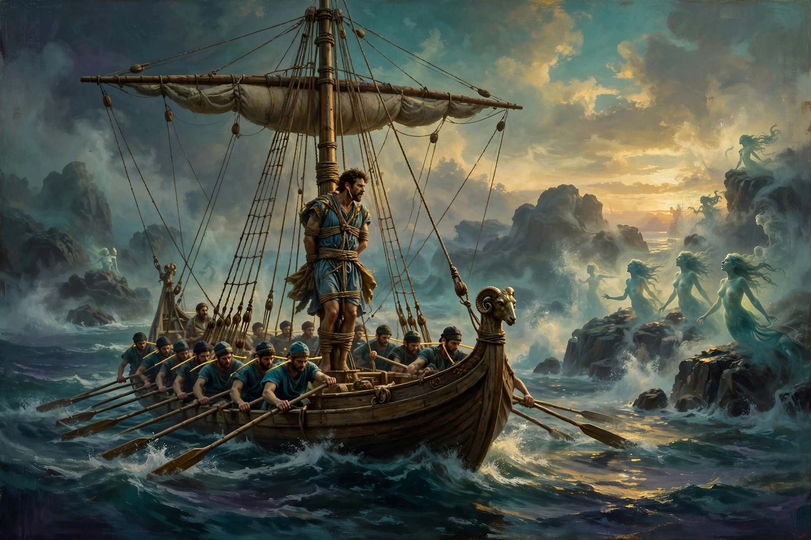
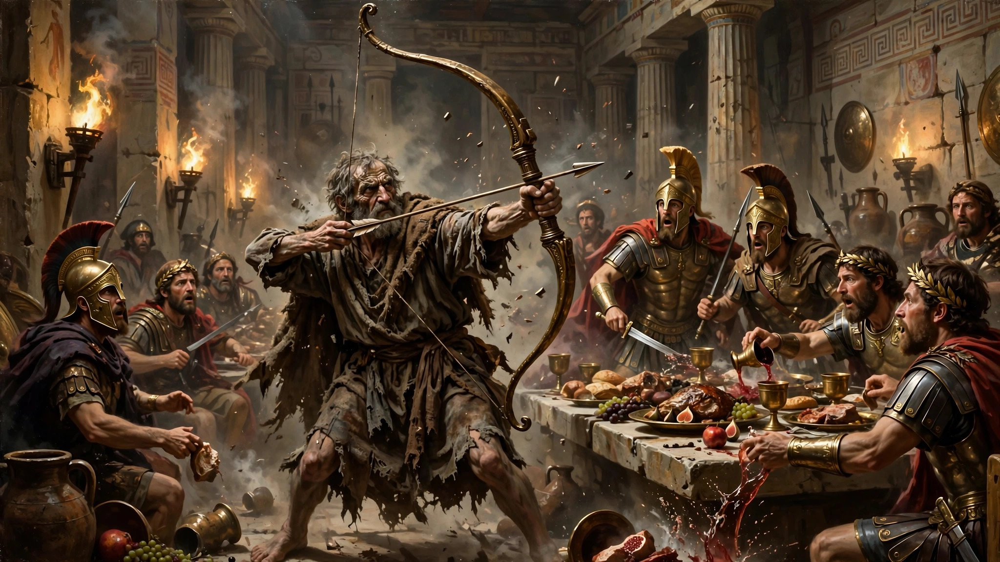

知道你射箭厉害，但也不能乱射吧
欢迎点击上方名片关注我。您的支持是我坚持原创的最大动力。
首映日去看了诺兰的《奥德赛》，看完回味许久，由衷欣赏和赞叹诺兰用电影语言讲故事的超凡能力。三年前我看他的奥本海默时，还觉得该剧的成功大体应该归功于大众熟悉的重大历史题材。今天看了他的新作，能把印象中晦涩难懂的西方古典英雄史诗拍的如此接地气如此具有观赏性和娱乐性，我对他除了佩服和敬仰就没有别的话可说了。
在开始讨论剧情前我想先澄清一个误区：之前很多自媒体和技术党说什么这部电影不看imax70 mm(全球符合这个条件的影院屈指可数，亚洲甚至没有)等于白看。我完全不同意这种观点。我们就是在一家普通的杜比影厅看的，觉得试听效果足够好了。这部电影真的看点在于内容、故事非常有吸引力。近三小时全程无尿点，没有一个画面、一句台词、一个表情、一个动作是多余的。可以说这部电影回归了电影作为一种艺术的本质，即纯粹的美学上的娱乐性。所以，还在犹豫要不要特地出趟国去追求imax 70mm银幕震撼感受的朋友们，你们大可以放心地走进离你最近或者最方便的电影院，去看去享受就对了。
回到正题。说实话看电影之前我心里是有点打鼓的，因为听名字我就觉得这部电影有门槛。希腊神话我读过一点，也就知道几个名字和几个著名的故事而已。荷马史诗我更是只在教科书上读到过介绍，根本没接触过原著。所以我进影院前就做好了看不懂或者中途睡着的心理准备。但从电影一开始我就完全沉浸进去了，整个感受就像看一个距离很近的现代故事，甚至故事的冒险风格有些似曾相识。我一度联想到了中国的古典神魔经典《西游记》。两者的共同点是都是艰辛、充满坎坷和挫折的旅途，不同的是，西游记是朝圣之旅，而奥德赛是返乡之旅。下面就先简单讲讲电影语言讲述的奥德赛的故事。
（以下有剧透，请谨慎阅读。另，故事有点长，但请一定耐心阅读，因为这些故事真的很有趣。为简化和可读性起见，我抛弃了其中的大部分希腊神话人名，以通俗易懂的代号取代）
奥德赛的字面意思是“奥德修斯的故事”，其主角奥德修斯是古希腊时代一位智勇双全的英雄，也是伊萨卡之王。故事的背景是特洛伊战争及战后奥德修斯一行艰辛返乡的故事。电影大致分三个部分：1，奥德修斯献木马计赢得特洛伊战争；2，奥德修斯一行人艰难返乡，最终只有奥德修斯一人生还；3，奥德修斯伪装潜入伊萨卡，一番苦斗消灭觊觎王后和王位的敌人。
希腊斯巴达国王阿伽门农弟弟的妻子海伦是倾国倾城的绝色美人（电影里演员的颜值肤色不在本文讨论之列，这里只讲故事设定）。特洛伊王子垂涎海伦的美色，趁到阿伽门农处做客的机会骗走海伦（一说掳走）。阿伽门农冲冠一怒，组建希腊联军讨伐特洛伊（影片中解释抢回海伦只是表面原因，真实原因是拓展商路）。奥德修斯率众参加了联军，并成为阿伽门农最器重的爱将。联军渡海围攻特洛伊城，但无奈其固若金汤，久攻不下。联军士气低落。于是机智的奥德修斯献上木马计：制作一个巨大的木马，让士兵藏于马腹中。然后留下一个叫西农的士兵，向前来查看的特洛伊士兵假称木马是献给雅典娜女神的礼物。特洛伊人不知是计将木马作为战利品拖入城中。入夜后，在木马腹中躲藏的希腊士兵悄悄溜出，打开城门，与城外大军里应外合，攻陷了特洛伊城。城陷后，希腊士兵大肆屠城，将特洛伊城洗劫一空，并夺回了海伦。（顺便提一句，有种电脑病毒就叫 Trojan 特洛伊，就是来源于这个故事）
胜利的希腊大军各自返乡。奥德修斯及部下乘三艘战舰踏上返回伊萨卡的旅程。奥德修斯一行从特洛伊出发时本已身心疲惫，没想到他们的返乡之路仿佛受到诅咒，充满了凶险。接下来他们要经过一道道的难关，虽然没有九九八十一难那么夸张，但这些难关一个比一个恐怖。
第一关他们来到一个岛上，看到一只羊。有个大聪明士兵拔箭就准备射，被奥德修斯及时阻止。说羊一般成群出现，跟上它就能找到羊群。他们跟着那只羊来到一个山洞。山洞里漆黑一片，他们往里走看到一堆火焰的余烬，表明这里有人居住。大家伙看这里的环境感觉很瘆人，都说要走。还是奥德修斯有胆识，说我们留下来等主人回来，有宙斯法则怕啥呢（宙斯法则简单讲就是待客之道，不管客人是什么身份，到你家就得招待，不得伤害）。天快黑时主人果然回来了，但大家一看吓得魂飞魄散。那是个独眼巨人，惨白的皮肤，十多米高，走路动静跟地震似的。巨人带着一大群羊回到洞里，一进门就拿一块巨大的石头封住了洞口，这下奥德修斯一行彻底没了退路。
开始时巨人没发现他们，但有几个倒霉蛋弄出点动静被他发现后直接拿起就往嘴里送。好嘛，这是拿这些小人儿当宵夜了。士兵们虽然很害怕，但还是展开了反击。但他们的武器对巨人来说简直像笑话，丝毫伤不到巨人。巨人吃了两个士兵觉得不好吃，也懒得去追其他人，直接倒地就睡。奥德修斯瞅准机会从火堆里拿出一个长长的烧火棍，对准巨人的独眼捅进去。巨人痛得惨叫在山洞里发了一阵子狂。好在士兵们早有准备已经躲好，才没有产生大的伤亡。巨人这时突然说起人话来，自言自语地祈求他的父亲波塞冬（海神）为自己报仇。众人听到也没在意。等巨人睡觉后，大家商议怎么逃离山洞。正一筹莫展时，还得是奥德修斯智谋过人，又想出了个可行的计划：等第二天巨人起来开门出去放羊的功夫，他们低头躲在羊群中混出洞去（巨人只有一只眼，而且被捅瞎了，肯定看不到他们）。
第二天早上大家依计划行事，总体上很顺利，大多数士兵安全逃离。如果没有奥德修斯随后的一个“骚操作”，可能大家都能安全顺利地回家了。殿后的奥德修斯转身看了眼独眼巨人，对其身为神祇之子却不遵守宙斯法则感到愤怒，不想就这样便宜了他。于是自信满满的他拉满弓向巨人瞄准，部下军官连忙阻止他，不希望他节外生枝，惹祸上身。可他不听劝阻，坚持射了一箭。奥德修斯是神箭手，这一箭又准又狠，巨人吃痛怒不可遏地追上来。奥德修斯一行狼狈逃窜，及时上船。幸亏巨人不谙水性，才没有继续追击。奥德修斯得意之际绝没想到，一时的意气用事会给自己和战友酿成大祸。
接下来他们来到另一个岛，上岛后没多久看到一片树林。在树林里走了一会，有士兵发现一个穿着银白色闪亮披风的个子不高的人背对着他们。叫了两声那人转过头来，看上去是个小男孩。士兵们向他表明没有恶意，只是想交换点食物。没想到小男孩突然尖叫了起来。结果冲来了一大群三四米高的银铠巨人，奥德修斯和士兵们见状疯狂后撤。但银铠巨人们很快追上他们，一顿剁菜切瓜，杀得尸横遍野。
最终三艘战舰只剩一艘逃走，其余两艘的船员尽被屠戮，他们的船也生生被银铠巨人们拆毁。仅这一关就损失了三分之二的人，真是惨不忍睹。
到达第三个小岛时，残余士兵普遍对奥德修斯产生了强烈了不满，认为前两个小岛损失惨重主要责任在他。如果不是他做事不顾后果，领导无方，他们也不至于落到这么惨的境地。于是他们在一个军官的率领下临时解除了奥德修斯的指挥官职务（相当于哗变），命令奥德修斯留下守船，其他人上岸找吃的。士兵们看到岛的山顶上有一个房屋，于是向上攀登。在攀登途中，他们惊恐地看到一些石窟，里面都是各种大型猫科动物（狮虎豹之类）。但奇怪的是，这些猛兽只是盯着他们，并没有要攻击的意思。到达山顶的房屋，他们看到屋外有口大锅在煮东西。饥肠辘辘的他们闻到香味不禁哈喇子直流。正待进屋，突然出现一个中年妇女。妇女看到他们吓得半死，歇斯底里地尖叫起来。一名军官忙上前压住她，安抚说他们只是想要点食物，并无恶意。半响妇女才半信半疑地安静下来，然后拿了碗给他们盛食物。看来妇女是懂宙斯法则的。
接下来发生了诡异恐怖的一幕。士兵们狼吞虎咽时，妇女挨个去揉搓他们的脸。不一会儿，这些士兵的脸发生严重变形，接着身体也开始扭曲变形。最后，这些士兵变成了一窝肥猪。妇女心满意足地把它们赶进了猪圈。
在海边的奥德修斯等了半天不见士兵们回来，于是上山找他们。当他遇到那名妇女时，向其询问士兵们的下落。妇女一边称没见过他们，一边给奥德修斯盛食物招待他。奥德修斯四周看看，发现旁边一个猪圈里的猪异常躁动，起了疑心。他与妇女交谈了几句，妇女盛情请他吃东西。奥德修斯把东西拿到嘴边正要吃时，旁边鸟笼中一只乌鸦拼命地扑腾起来。正当奥德修斯感觉不妙时，妇女突然用一把明晃晃的尖刀抵住了他的喉咙。奥德修斯岂是常人，他早预判到妇女起了杀意。在妇女拔刀的同时，他一把抓住了笼中的那只乌鸦。妇女见状惊恐万分，看来乌鸦对她来说很重要。僵持不下，双方各自退让，开始交谈。
经过一番交谈，奥德修斯得知这名妇女是一名女巫（一说半神），乌鸦是她的姐姐，被她施法变成这样。至于她为啥要对士兵们施以巫术，她的解释大概是出于害怕而先发制人，还补充说他们本来就是猪（不知是字面意思还是形容）。奥德修斯最终说服女巫还原士兵们的原貌。女巫觉得跟奥德修斯聊得还不错，就同意了。士兵们恢复原貌后想要除掉女巫，被奥德修斯阻止。作为回报，女巫给他透露了一些“天机”。
女巫告诉奥德修斯他们已严重偏航，要想找到正确的返乡之路，必须先去冥界问一位先知的亡灵。奥德修斯听从女巫建议，来到冥界。在那里他从先知那儿得知下列信息：1.只有他一人能最终返乡，其余人都会死。2.途中会遭遇女妖塞壬之魅惑歌声的考验以及吃人怪（会吃掉6人）与漩涡怪（会吞没全船）之间的抉择。3.在接下来的某个岛上绝不可宰杀太阳神的神牛，否则有灭顶之灾。4.海神波塞冬还没消气，后面的航程可有罪受。

另外，奥德修斯还遇到西农和阿伽门农的亡灵。前者指责他在木马计中欺骗和牺牲部下，后者以自身惨痛经历（回斯巴达后被王后杀害）告诫奥德修斯不要光明正大回家，要伪装潜入。
奥德修斯最大的优点就是听劝（除了没事乱射独眼巨人这件事外），所以后面的经历大体都比较顺利。在快到达塞壬所在岛时，奥德修斯令船员全部用蜡蜜封住耳朵，并警告他们无论如何不要摘下来。然后让船员把他自己牢牢绑在桅杆上，但耳朵里不塞东西。他想体验下塞壬的歌声，但又怕自己把持不住（这该死的好奇心）。路过塞壬之岛时，奥德修斯听到歌声如万蚁钻心般难受，幸好船员把他绑得很结实，才没出什么幺蛾子。船员们大多听奥德修斯的劝，路过塞壬之岛时不听不看一心划桨。但还是有个别不怕死的，摘了耳中的蜡蜜，一听到塞壬的歌声就立刻跳水游向塞壬，再也没回来……
接下来，“电车难题”又来了（熟悉本公众号的朋友最近是不是有点耳朵听起茧了，嘿嘿）。不过奥德修斯压根不觉得难，因为他做了简单的选择：舍小救大。但他有一点不厚道，向船员们隐瞒了此事，直接做出了选择。他先是指示船员躲过漩涡怪，然后不可避免地让6名船员被吃人怪吃掉（这是保住更多人性命的代价）。幸存船员知道实情后虽然很愤怒，但毕竟自己是受益者，也没啥太多抱怨的。
之后他们又登上一个岛，发现一大群牛。奥德修斯警告全体船员，绝对不要宰杀这些牛（它们是太阳神的牛），否则会招来杀身之祸。船员们咽了咽口水，勉强答应了。刚开始，士兵们还能信守承诺，绝不打这些牛的主意。可时间一长，岛上除了这些牛啥吃的没有。眼看大家就要活活饿死。一天，奥德修斯发现所有人都不见了，正纳闷发现远处有个大坑中露出火光。走近一看，一大群士兵正在吃烧烤牛肉呢，吃得可香了。奥德修斯没好气地问：你们以为挖个坑烤，太阳神就看不见了吗？一个士兵淡定回答：主要是不想让你看见。
果然，剩余的航程可“精彩”了。太阳神和波塞冬联手复仇，海上电闪雷鸣暴雨狂风一起来，把一艘可怜的小船拆了个稀巴烂（提醒一下还没观影的朋友，这段屏幕闪烁非常夸张，如有不适请闭眼）。最终，只有奥德修斯一人被冲上岸。他被岛上的女神卡吕普索救起，与之度过了七年愉快的二人世界生活。最初，奥德修斯完全失忆。后来才慢慢恢复记忆。七年后，他终于踏上归途。
前面讲的都奥德修斯视角的经历，下面讲讲他在外冒险时家乡伊萨卡发生的事情。奥德修斯出征特洛伊后，十多年未归，杳无音讯。王位空缺，王子虽已成人，但尚显稚嫩。一帮不怀好意的武士频繁造访王宫，追求王后。出于宙斯法则的要求，王后不能驱赶这些无赖，还得好好招待他们。这帮乌合之众中有个带头的武士（以下简称大坏B），武艺稀松平常，但惯使诡计。他觉得奥德修斯这么多年没回一定死了，王后孤儿寡母无依无靠，正是自己上位的机会。于是开始蠢蠢欲动，一再给王后施压，要她接受求婚。王后只得苦苦周旋。
王子虽势单力薄，但绝不甘心将王位拱手让人。于是他偷偷溜出伊萨卡前往斯巴达打听父亲奥德修斯的消息。他从阿伽门农的弟弟、现任斯巴达国王那儿得到消息，奥德修斯可能还活着。重燃希望的王子回到伊萨卡，把这个消息告诉王后，同时着手准备对付大坏B那帮家伙。这时一个老乞丐来到伊萨卡，起初没有引起多少人注意。但有一只快老死的猎狗见到老乞丐时却显得异常激动，以至于不久就咽气了。王子恰巧目睹这一幕，他大概知道了老乞丐的身份，但暂时不想声张。

老乞丐以特洛伊老兵身份面见王后，娓娓道来特洛伊战争的残酷景象以及奥德修斯返乡的惨痛经历。王后听闻大概知道了老乞丐的身份，但明白他掩盖身份肯定有他的理由，也暂时不动声色。
王子与王后商量了一个计划：王后将于次日举行宴会邀请所有追求者，假称宣布改嫁的人选。实则先把宫殿里的兵器全部收起来，等人来齐后关闭所有出口，然后将他们一网打尽。
第二天大坏B一行果断上当赴约。王后导演了一场古希腊版的“辕门射戟”。拿来奥德修斯的弓，声称谁能上好弓弦，再一箭射过一排斧头的空隙，她就嫁给他（听上去耳熟？还记得TSG影业公司的logo动画吗？那就是对这个场景的精准还原）。大坏B一伙听了兴奋不已，心想还有这种好事？可他们谁也没掂量清楚自己和奥德修斯这样半神一般的存在有多大差距。就上弦这第一关，在场没有一个人能做到。
这下尴尬了，但大坏B这帮人怎么会按牌理出牌，他们打算来硬的。这时老乞丐出场了，说要试试。全场坏B开始哄笑。老乞丐更坏，刚开始还装着上不了弦，又惹来更大的一阵哄笑。接下来，老乞丐就出其不意地秀手艺了。他轻松上好弦，然后做了一个招牌动作，潇洒地拨了一下紧绷的弦。弦声一响，不仅王后和王子，还有全场所有人都同时意识到：王者归来矣！
接下来大家也不藏着掖着了，开打。在这场非常不势均力敌的战斗中（一边是奥德修斯父子二人，另一边则是如狼似虎的上百名武士），虽已年迈的奥德修斯如有神助，凭借一把弓箭，在儿子的配合下，硬是一箭一箭几乎全歼敌人。最终手刃首恶大坏B。剩下不多的一些武士瑟瑟发抖地跪地臣服。
这场战斗是全片的最高潮，看着过瘾是过瘾，但也让人非常着急。这个场景最让我觉得不合理的地方就是，为啥要在逼仄的封闭空间里全程用弓箭这种远程武器？知道你射箭厉害，你是神射手了不起，但总得分个场合吧？我没看过原著，只是觉得这不符合常识和效率原则。如果只是要突出奥德修斯这个神射手的超凡能力，而不顾常理这样写（或者这样编）就太离谱了。如果我是荷马，既然关门打狗，直接烧是最经济省事的办法。如果怕火灾控制不了，放毒气甚至放烟熏也行啊，关门打狗方法多得去了。非要一箭一箭射死敌人才显得主角帅气是吧？我服了。
以上小小吐槽一下，但瑕不掩瑜，我认为这部电影绝对是诺兰的巅峰之作，也算得上西方史诗类电影的集大成之作。这部电影有笑点、泪点及爽点，唯独没有“尿点”。本片以完美的叙事技巧和节奏，惊艳的服装、场景设计和精彩的美术摄影，加上好莱坞一线大咖炉火纯青的倾情表演，做到了全方位无死角的优秀，可以说明年横扫奥斯卡毫无悬念。前无古人是当得起的，是不是后无来者，就要拭目以待了。